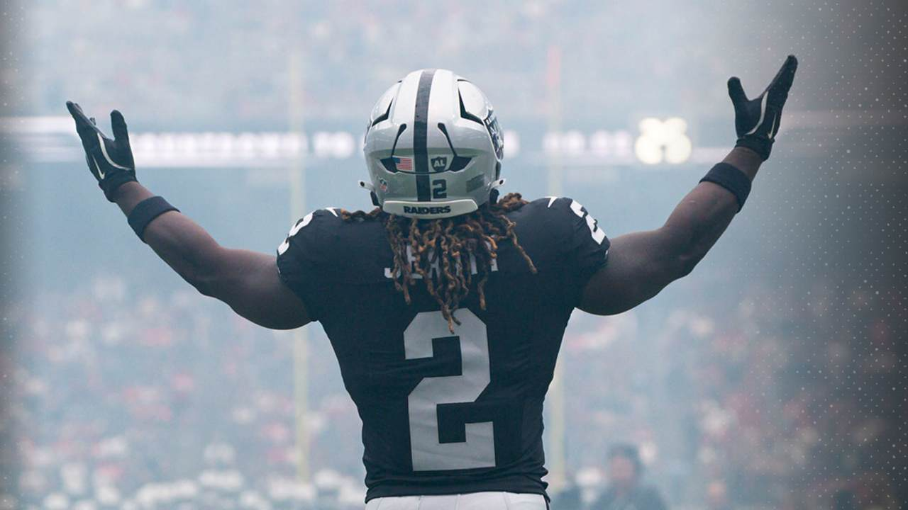
How could we not start by talking about Jeanty? Andy gives up on him completely, and he has a masterwork game (on my bench.) Is this the start of the ascent, or was it just a prime matchup against the Bears?
Man, lots of injuries and our first bye week… some interesting lineups out there this week. Hope we can get out of this week with some healthy guys and get back to full strength next week.
Matchup of the Week This is a big week… for the 1-3 teams! We got two 1-3 vs. 1-3 matchups. Could create some real space at the bottom of the league. But fuck those shitty teams, let’s look at the good stuff.
Spitters Not Quitters (1-3) vs. Cook-n Lamb for my Nabers (2-2) Can Kris deliver again, with a The back-to-back champ? PJ’s had some tough luck with his top two picks (Lamb and Nabers) out, Nabers of course, out for the season. But this is the NFL and weird shit happens every week.
What to watch: * Cowboys vs Jets will be QB vs QB, every possession will matter, and these defenses ain’t so good. * Both guys turn to new #1s, with Waddle ascending to the Fins WR1, and Dowdle stepping in for Hubbard in Carolina (and it’s the same game! * Kris will have to sweat out SNF with Cook and Henderson going back and forth.
Waiver Wire Spice 🌶️ * Active week with the injuries and first bye week. 11 pickups on Wednesday, another 8 on Thursday. Yeeeesh. * Pangy’s lineup is dessimated this week, so my man swung big on could-be-league-winner, Woody Marks at $38, outbidding four others. * On Thursday, Neil went full psycho, outspending his bidders by a whopping $73, swapping out four of his guys for: * $39 Rachaad White (next bid was $1) * $22 Emari Demercado (no other bids, then it leaked that Michael Carter is the lead back) * $11 Kylo Murray (no bids) * $3 Matt Gay (no bids) * Some others I liked: $7 for Darius Slayton, for PJ in an open NYG WR room, $1 on Hunter Henry for Andy, $1 Malik Washington for Tony - who knows, maybe he can be Tyreek Lite.
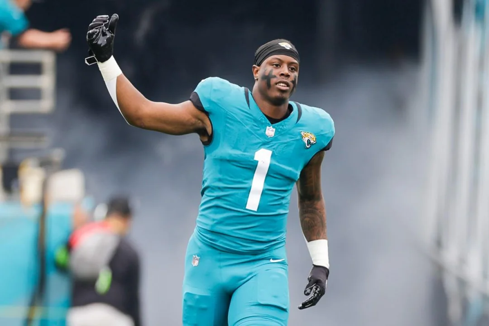
1. Kris: 3-1, PF: 524.48, W3 ↔️
Leads the league in points, has three straight wins, and is fielding a very respectable lineup with four of his guys on bye. That’s a pretty good look.
Biggest Surprise: Kris’s running backs having solid bounce back years, with Etienne shockingly at RB11, and JT running away each game coming in at RB3.
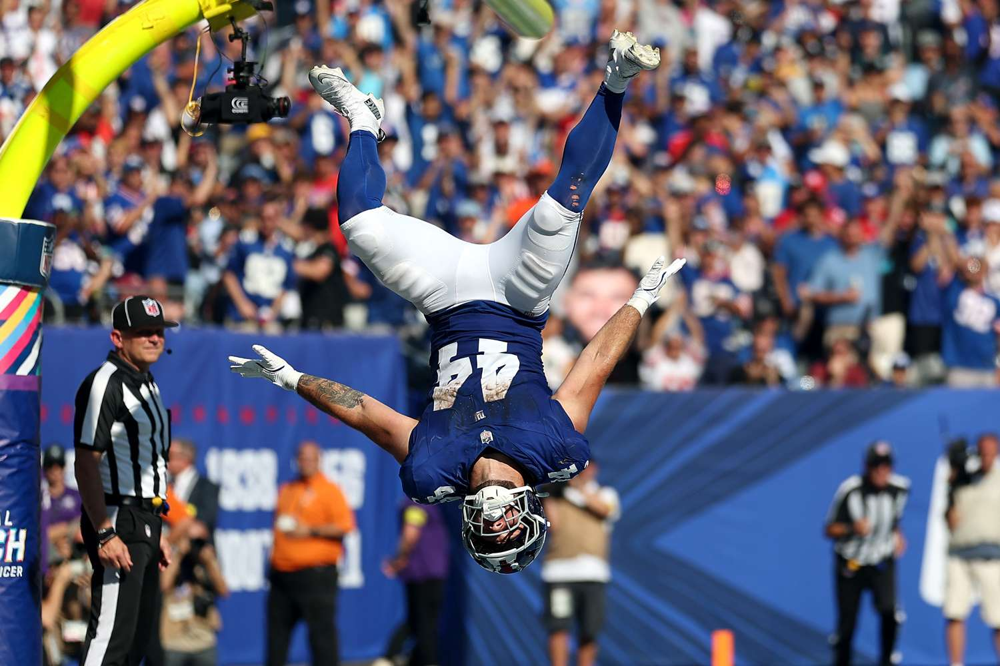
2. Andy: 3-1, PF: 468.86, W1 ⬆️⬆️⬆️⬆️
Turner brothers coming out the gate hot. Puka cannot be stopped. Skattebo is an immediate sensation, and Spencer Shrader keeps delivering at K1.
Biggest Surprise: I mean, it’s gotta be Quinton Johnston. We laughed, but now we’re crying, watching Andy’s WR room on lock.
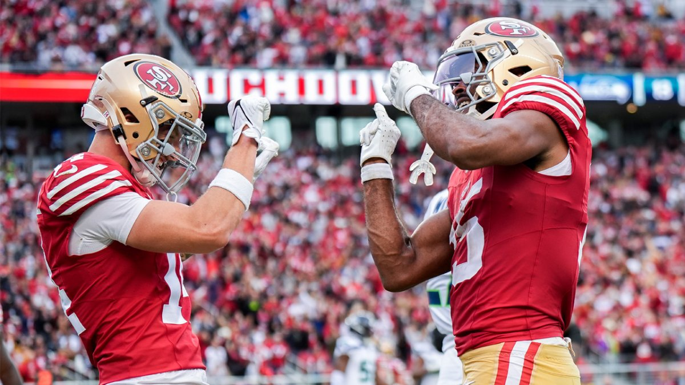
3. Pangy: 3-1, PF: 521.06, W2 ⬇️
Pangy wins, but drops a spot due to a litany of injuries - he’s currently got five guys on the roster either as OUT, IR or PUP. However, the lineup still looks dangerous, so perhaps he’ll prove a point against me this week.
Biggest Surprise: I mean, to me, it’s Garrett Wilson at WR5. He’s re-established the college connection with Fields, but even went bananas with Tyrod Taylor. Jets are bad and they’re the Jets, but GW is proving he belongs in the top tier of WRs.
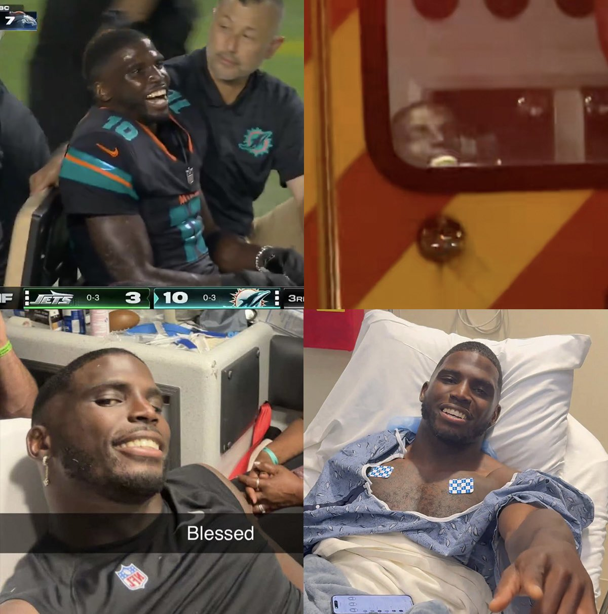
4. Jake: 3-1, PF: 469.26, W3 ⬆️⬆️⬆️
Three straight, but also have the least amount of points scored against, as my team has grown stronger week by week. However, RIP Tyreek (glad you’re taking it so well) leaving some major question marks in my self-proclaimed “best WR depth” after the draft.
Biggest Surprise: Javonte has been a miracle for me, but I’m going with the ghost of Tee Higgins here - totally absent minus one TD catch where two defenders hit each other and let him walk in.
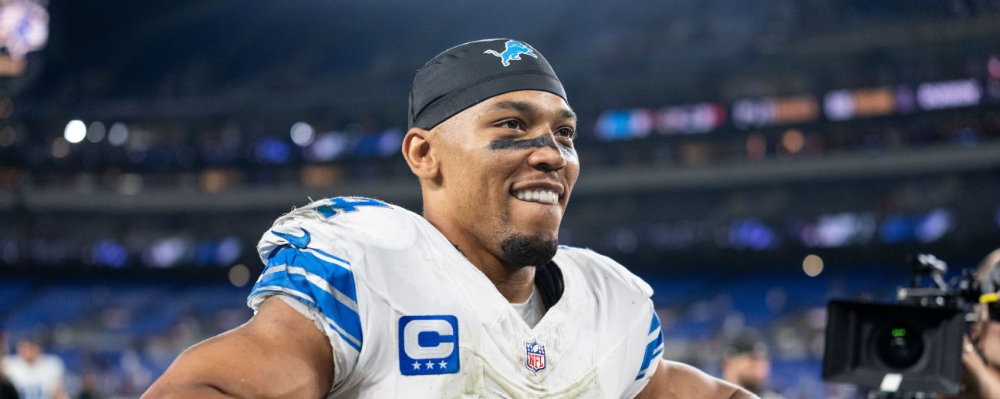
5. Joel: 2-2, PF: 492.86, L1 ⬇️
Joe’s lineup is deep and thick. He probably deserves to be #3 or #4, but wins matter. You know things are going well when K9 is chillin on your bench. And c’mon, Amon Ra deserves to be in the Puka, Chase, and JJ conversation. What a hallmark of consistency.
Biggest Surprise: Most things are going well, but it’s been crazy to Brian Thomas Jr has been a mystery. Lots of targets, but only 12 catches on the year - that’s just a good week for Puka.
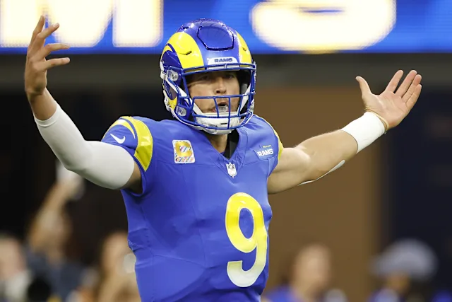
6. Seif: 1-3, PF: 485.96, L2 ⬇️ ⬇️
Off to a nice start after CMC and Stafford delivered on TNF. Zilla has the pleasure of having the most points scored against him so far, but looks to bounce back against Tony’s struggling squad.
Biggest Surprise: CMC has been healthy all season. Lol, but for real, he’s just been classic CMC - why can’t defenses stop him when there’s no other Niner starter being on the field?? (Deebo going nuts, too.)
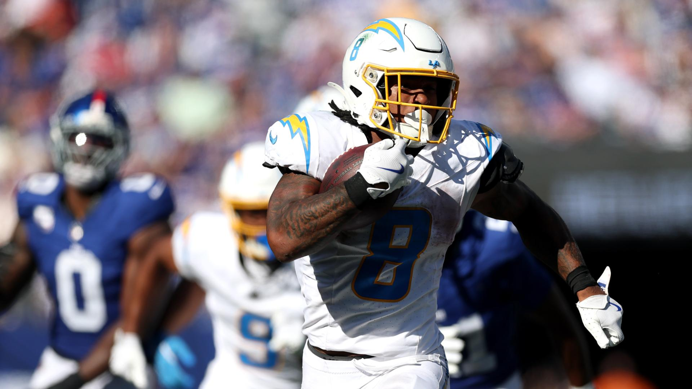
7. Neil: 1-3, PF: 427.40, W1 ⬆️⬆️⬆️
Maybe a bit of an overreaction, but it’s Neil gets in the win column and there’s some sadness below. Gotta love a man that puts his money on the line, going all in on needing wins now, spending almost all of his budget.
Biggest Surprise: It’s hard to remember who’s sucked because he dropped them all this week. But, let’s just go with Omarion Hampton. Looks to be a top-five back now that Najee is out of the picture. RB4 and RB7 over the last two weeks.
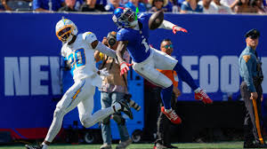
8. PJ: 2-2, 480.24, L2 ⬇️⬇️⬇️⬇️⬇️
This team is beat. up. PJ can’t wait to get Rashee Rice back to help replace Lamb and Nabers. Can James Cook up enough to keep his team afloat? Could a Treveyon Henderson explosion be coming? PJ hopes so, locking him into the lineup this week.
Biggest Surprise: Keenan Allen’s resurgence has been amazing, supplanting Ladd as the WR2 for the Chargers (remember, QJ?)
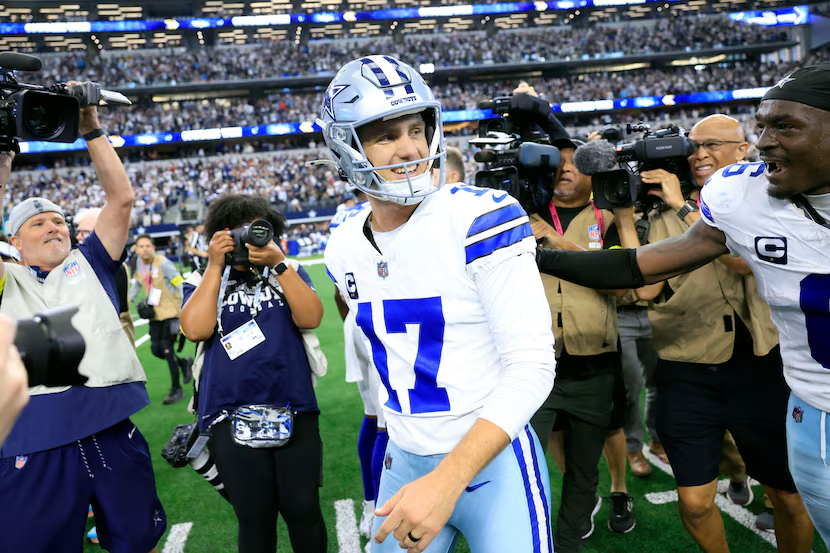
9. Chris: 1-3, 413.12, L1 ⬇️
Daniels returning this week gives Chris a nice boost, as he boasts the least points scored to date. Some major questions all over this roster, except the best player in the league… Brandon Aubrey.
Biggest Surprise: Where is AJ Brown!?
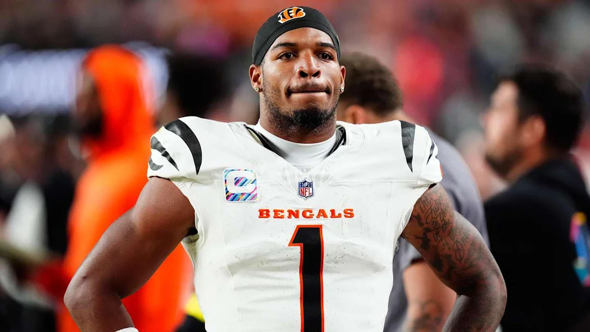
10. Tony 1-3, 419.02, L3 ⬇️
Tony looked like a genius after drafting Tyler Warren, but unfortunately, he also drafted the (unstartable?) Ja’marr Chase at #1. Curse of the number one spot is real.
Biggest Surprise: it is wild that Ladd McConkey is the #3 in the Chargers offense, but he’s got a good chance to bounce back this week against a soft Washington secondary.
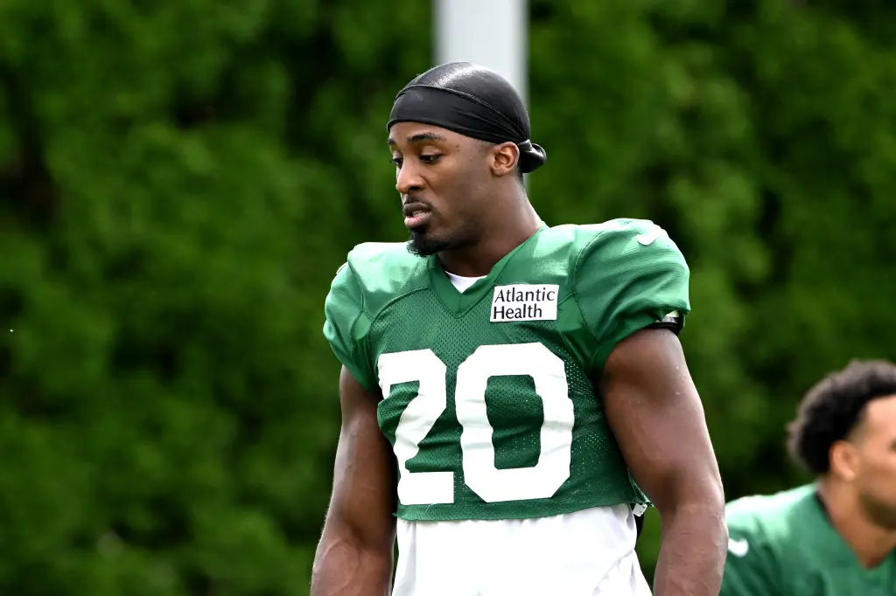
“Teams shoot themselves in the foot then we come back and shoot ourselves in the head.”
- Breece Hall
Don’t be like Breece. Don’t be like the Jets.
Good luck to everyone besides Pangy! - Jake 💋